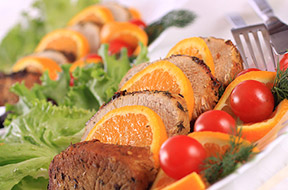
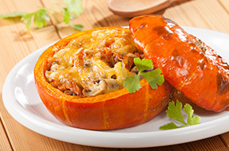
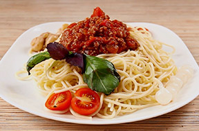
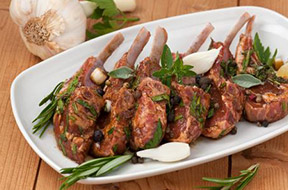

Фирменные блюда шефа
-

Свиная грудинка с апельсином и корицей -

Карпаччо из тыквы с креветками и руколой -

Паста болоньезе -

Грудинка баранья по-флорентийски
Искусство готовить, по версии мэтра, – это, прежде всего, чувства, эмоции и настроение, которые можно подарить другим. В поисках этих главных ингредиентов, уроженец Рима, он объездил всю Италию. Впитал ароматы Тосканы, Сицилии, Неаполя, и наполнил ими свои блюда. Его кредо - импровизация с душой. Отточив мастерство в десятках лучших заведений, от лондонского гранд-отеля «Savoy» до московского «Forbes», в Петербурге Фабрицио осуществил свою мечту – о «живом» и «тёплом» ресторане, где гости чувствуют себя как дома.
Для создания гастрономических шедевров он использует свежайшие натуральные продукты, обязательно по сезону. Ведь только естественное может быть полезным! Этому научила Фабрицио его бабушка Луиджина, которой он обязан страстью к кулинарии. Почтенной синьоре можно верить – в свои 90 она отлично себя чувствует, и придумывает новые рецепты. Их, кстати, немало в меню «Gusto» - консоме из телятины с тортеллини, пармезаном и шпинатом, салат из томатов с буйволиной моцареллой, тар-тар из тунца с каперсами, апельсинами и оливками, и - мечта гурмана - пармиджана из баклажанов. Впрочем, авторские рецепты шеф-повара не менее удивительны. Кролик по-римски с пекорино, ризотто с радиккио, каштанами и щёчками телёнка, тушёными в красном вине… Меню обновляется четырежды в год, а вкус каждого блюда неповторим – в этом, по мнению знаменитого шеф-повара из Италии, и заключается магия кулинарии.
Преподаватель одной из лучших кулинарных школ мира – римской «Gambero Rosso», он не расстался с любимым делом и в Петербурге. Мастер-классы Фабрицио Фатуччи в «Gusto» – не просто способ отлично провести время, выведать секреты бабушки Луиджины и «haute cuisine». Это настоящие гастрономические шоу, которые приносят радость. А именно это - уверен Фабрицио - и есть единственно правильная цель - для хорошего ресторана, шеф-повара, человека.